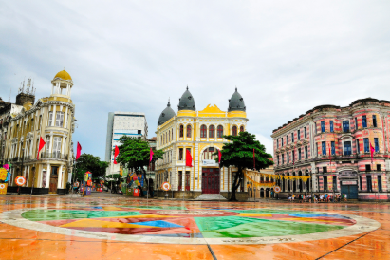
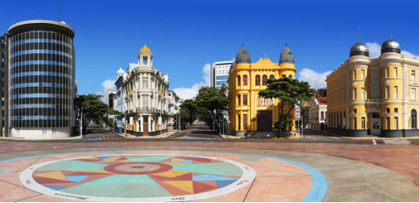
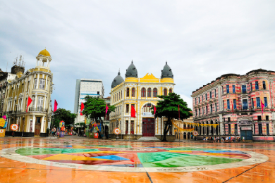
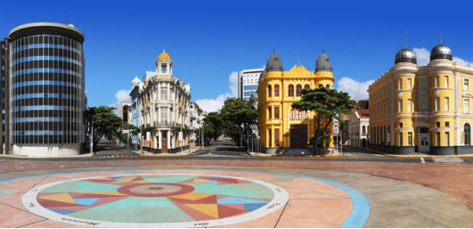

Hoje conhecida como Marco Zero, a Praça do Rio Branco está localizada no bairro do Recife (Recife Antigo) na cidade do Recife, em Pernambuco. A praça, ao longo dos anos passou a ser chamada de Marco Zero por conter em seu centro um marco zero quilômetro, responsável pela contagem das ruas do Estado. Em volta do marco zero encontra-se, pintada no solo pelo pintor Cícero Dias, a Rosa dos Ventos, inspirada na obra do pintor “Eu vi o mundo. Ele começava no Recife”. O Marco Zero é um dos pontos turísticos mais visitados na cidade do Recife e fica próximo ao Porto do Recife. Da praça é possível observar a longa muralha de arrecifes, onde está localizado o Parque de Esculturas Francisco Brennand.
Qual é a importância do Marco Zero para Recife?
Após o fim da exploração holandesa no Nordeste, a expansão ocorreu a partir do Marco Zero, já que o porto fica próximo do que viria a ser a praça. Convertida no centro histórico da capital pernambucan.
Como chegar no Marco Zero de Recife
Como se trata de uma praça pública e referência na cidade, há diversas formas de chegar lá. Além das sete linhas de ônibus que passam perto do marco, o acesso também se dá pela rua Riachuelo.